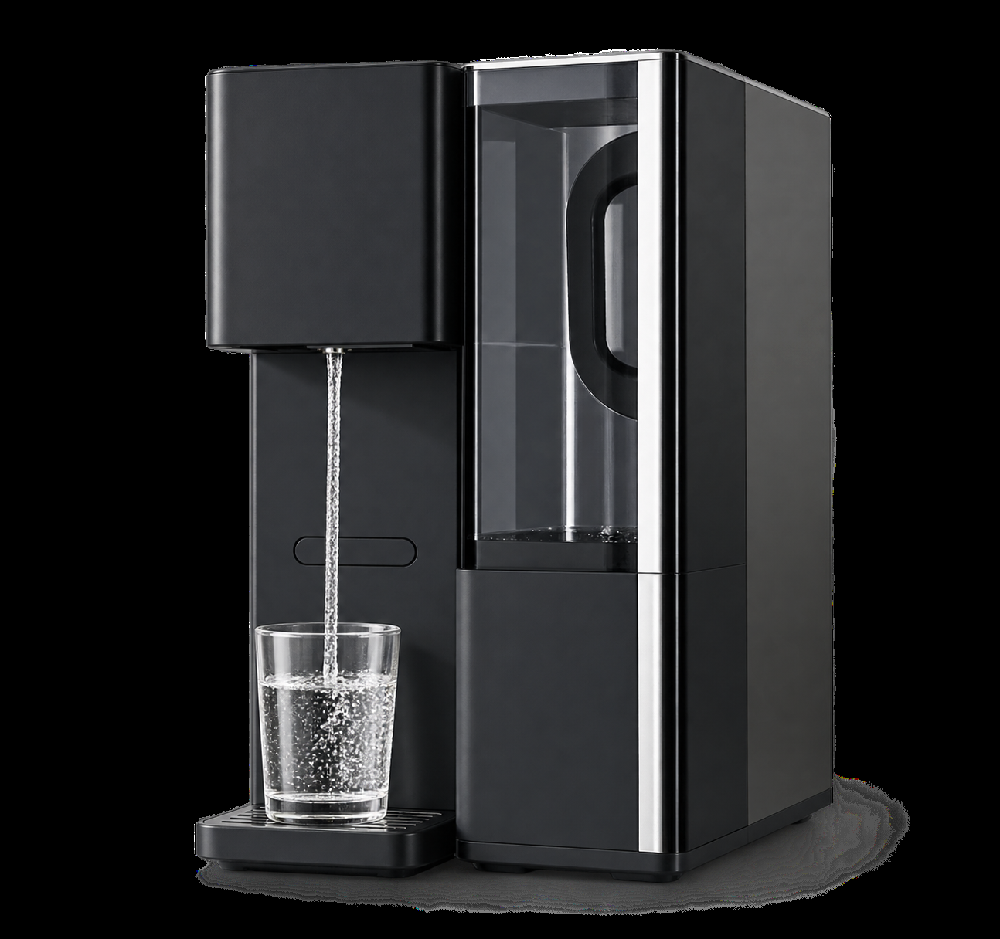

NEW

PU-T01
Desktop RO Water Purifier
A desktop RO drinking-water system integrating purification, water storage and hot-water functionality in one compact design.
FiltrationRO + Z901 5-in-1
Raw Water Tank5 L
Purified Water Tank1.2 L
Total Purification Capacity4,000 L